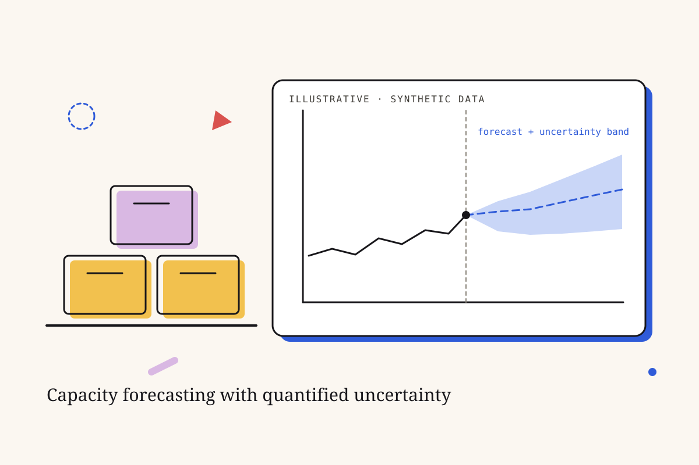

Amazon: sizing a system before the money is spent.
Forecasting how much storage a new automated sorting system would need, with the uncertainty shown, and generating the extreme scenarios the history didn’t contain.

How much space do you need to hold an order that isn’t complete yet?
Amazon was building an automated sorting system that holds customer shipments until every item in an order is ready, then releases them together.
Before committing capital, the team needed to know how much storage capacity that system would need, even though volumes change with the season, the time of day and the fulfillment center.
What shaped the work.
- Demand varied over time and between sites, so a single average would have been misleading.
- The simulation team relied heavily on historical data, which rarely contained the extreme low and peak periods they needed to test.
- The data is confidential. Nothing internal appears on this page, and the illustration uses synthetic data.
What I did.
I ran the analytics end to end: framing the problem, designing hypotheses, modelling, validating and preparing the analysis for leadership. I wrangled more than a million logistics and transactional records with Python and SQL.
Three steps: explore, forecast, stress-test.
- 1Map the variability first
Exploratory analysis, time-series forecasting and clustering across several fulfillment centers, to see the trend, the seasonality, and how demand varied over time and between sites.
- 2Forecast the capacity, and show the range
Predicted the storage capacity needed to hold shipments until orders were complete, and presented it to senior management with confidence intervals, so the investment decision rested on a range rather than a single number.
- 3Generate the scenarios history didn’t have
Built a data-transformation framework that fits probability distributions to the historical data and generates synthetic data under adjusted business scenarios, such as unusually low or peak periods, so the simulation team could stress-test the design.
What I can share.
The business figures are confidential, so this page describes the method and the decision it supported, not the numbers.
Honest limits.
- Synthetic scenarios are only as good as the fitted distributions; tails beyond anything in the history are assumptions, not observations.
- Next: backtest the capacity forecast against actual volumes once the system runs, and check how well the generated extremes match real peaks.
I can turn an open capital question into a forecast leaders can act on, show them how uncertain it is, and build the data tools a team needs to test what history never showed.